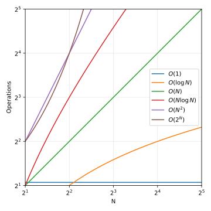
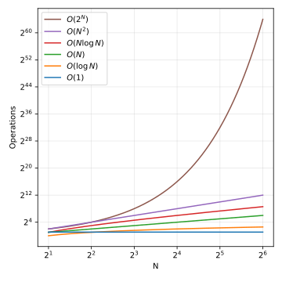
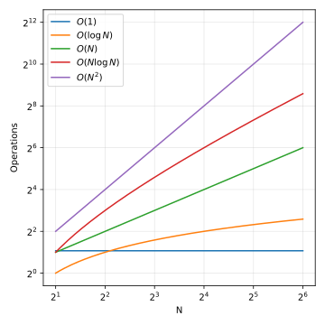

The word 'algorithm' comes from Algorithmi, the Latinized form of Muhammad
ibn Musa al-Khwarizmi's name (c. 780–850). In software engineering, the term
refers to a concrete recipe that solves a problem in a finite number of
steps. It's the essence of software engineering. Especially in RSE, where
most code consists of calculations and plots.
Because of the importance of algorithms in our code base, we want to make
sure that they are of a high quality and efficiency. Analyzing this in a
scientific manner was achieved with the big-oh notation. Its a "qualitative"
but correct and allgemeingueltig.

Figure 1:
Common time-complexity classes on a log-log plot with equal axis
scaling.

Figure 2:
The same complexity classes with axes auto-scaled to the data range.

Figure 3:
Growth rates with O(2ⁿ) removed, axes auto-scaled.
-- Algorithms and Data Structures Tutorial by Pasan Premaratne
Offered by freecodecamp.org.The tutorial uses python and has many visulasations.
One could follow the tutorial and test the programs in other programming
languages as well.
-- Lecture on the efficiency of algorithms in MIT's 6.00SC in the spring
of 2011 by John Guttag.
The lecture gives a nice introduction but uses python2 code.The syntax differences are quite clear, however.Here is the playlist of the whole course
https://www.youtube.com/playlist?list=PLB2BE3D6CA77BB8F7